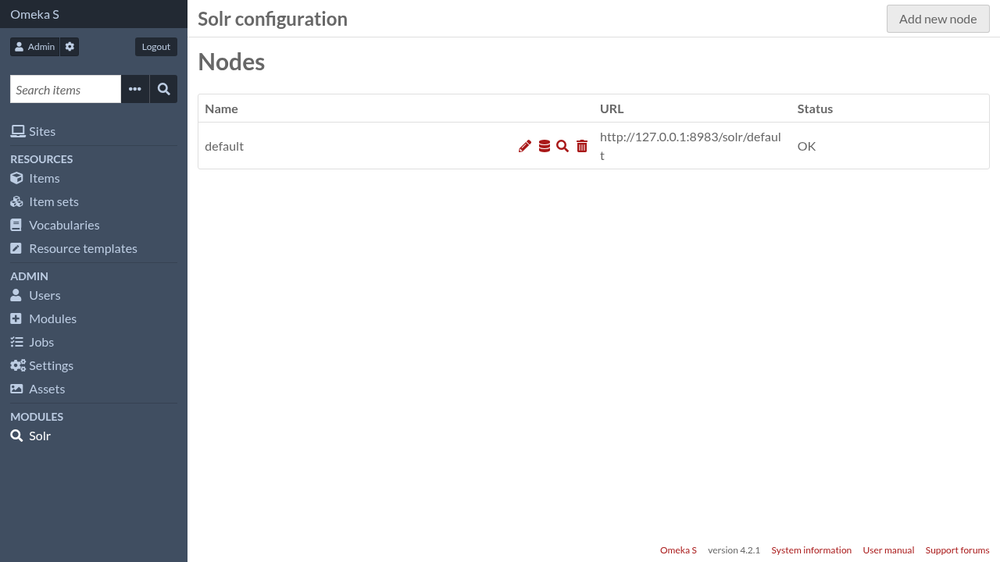

Configuration
Note
Only global administrators and supervisors are allowed to change Solr configuration
Configuration is organized around « nodes ». In the context of this module, a node represents a Solr collection (if Solr is running in SolrCloud) or core (if running in user-managed mode).
You can have as many nodes as you want, but it is an error to have several nodes represent the same Solr collection/core.
On most Omeka S installations, a single node will be enough.
A Solr node in Omeka S holds all the configuration related to that specific Solr collection/core. Things like:
Indexation settings (what pieces of Omeka S data get indexed into Solr documents)
Search settings (what kind of search fields are made available to the Search module)
Other Solr specific settings like default query fields (
qf), « minimum should match » (mm), highlighting parameters, …
Installing the Solr module automatically creates a node with default settings for easier setup. To start configuring it, go to the administration interface and in the navigation menu, click on « Solr ».

From there you can:
add a new node by clicking on the « Add new node » button at the top of the page,
edit the existing node settings by clicking on the pencil icon,
edit the indexation fields by clicking on the database icon,
edit the search fields by clicking on the magnifying glass icon,
delete a Solr node by clicking on the trash icon